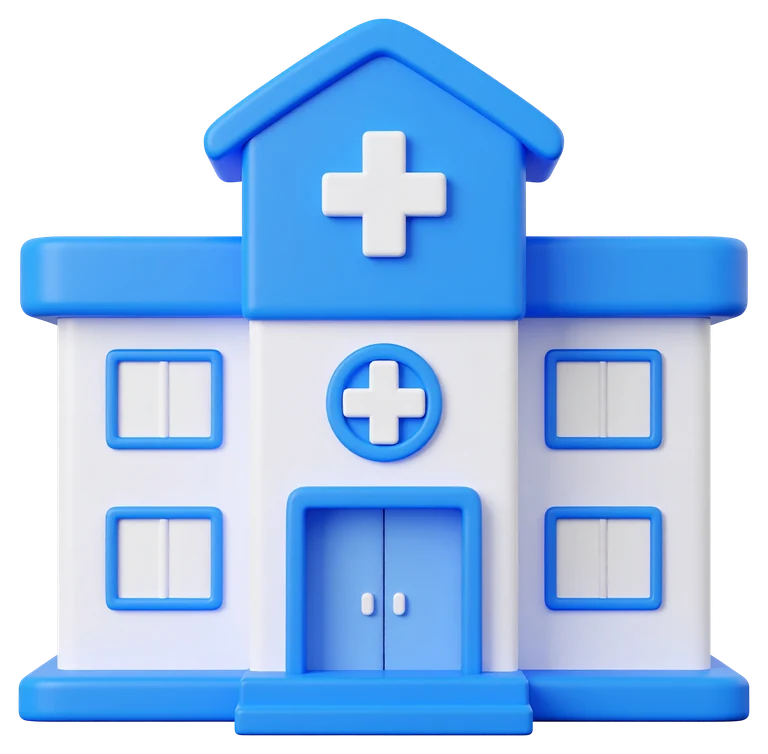

روزهای هفته
درباره درمانگاه معلم
درمانگاه معلم (کلینیک و درمانگاه) در محله اندیشه فاز ۱ اندیشه و خیابان رامین واقع شده است و بهصورت شبانهروزی به مراجعهکنندگان خدمات ارائه میدهد. این مرکز درمانی یکی از هفت درمانگاه در محله اندیشه فاز ۱ اندیشه است و از نظر موقعیت جغرافیایی در نزدیکی مراکز مهمی مانند شهربازی پارک هشتم و پاساژ طلا و جواهر بهار و همچنین فروشگاه شهر لنت، فروشگاه رفاه (اندیشه ۱)، تعمیرگاه فوق تخصصی گودرزی، تنظیم موتور محسنی و تعمیرات سونی و پاناسونیک و آیوا قرار گرفته است. همچنین با توجه به نظرات کاربران در اپلیکیشن نشان، میتوان گفت این مرکز درمانی یکی از کلینیکها و درمانگاههای خوب این منطقه است.
در حال فعالیت

مشاهده موقعیت روی نقشه